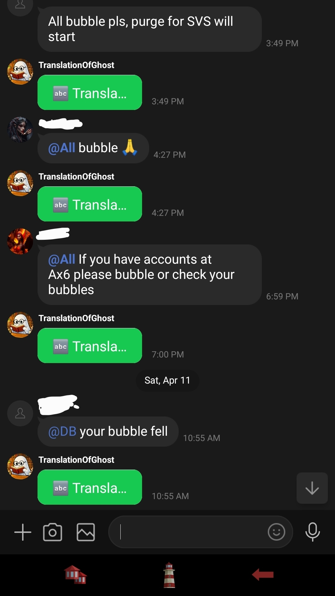
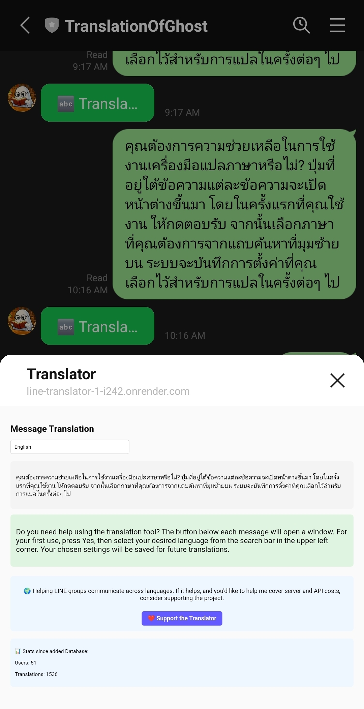
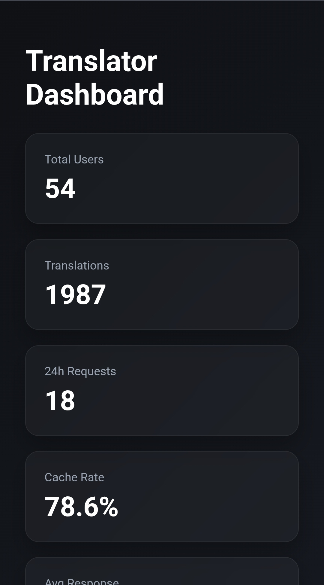

Clean Chat Integration
The bot integrates directly into group chats and only translates when needed, keeping conversations clean and readable.
A multi-purpose translation bot designed to improve communication in group chats without clutter or spam.

Most translation bots translate every message multiple times, flooding chats and quickly exhausting API limits. This makes them difficult to use in active groups.
This bot allows users to control what gets translated, reducing spam while keeping conversations readable. It also supports group-based language preferences, making it useful for both communication and language learning.
The bot integrates directly into group chats and only translates when needed, keeping conversations clean and readable.

Messages are translated instantly and displayed in a structured format to avoid clutter and duplication.

Gain insights into translation usage and performance with our comprehensive analytics dashboard.

Click to view the live analytics dashboard
JavaScript, Node.js, API integration, PostgreSQL